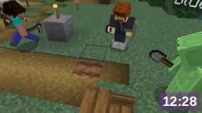
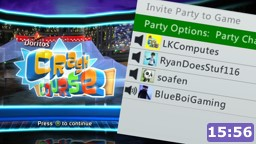

GAMES - VIDEOS - MEDIA - UTILITIES - OTHERS
GAMES - VIDEOS - MEDIA - UTILITIES - OTHERS
This is where you can watch some videos. this will be updated every now and then to feature more, so stay tuned!
sophieGaming |
|  man has mental breakdown over minecraft farmland [4] |
 starting 2023 by playing TF2 on potato PCs |